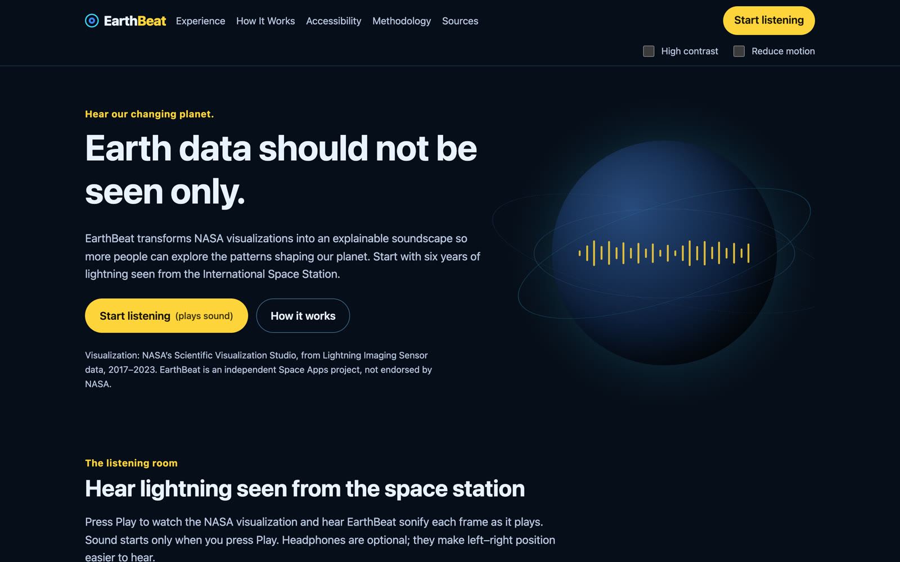
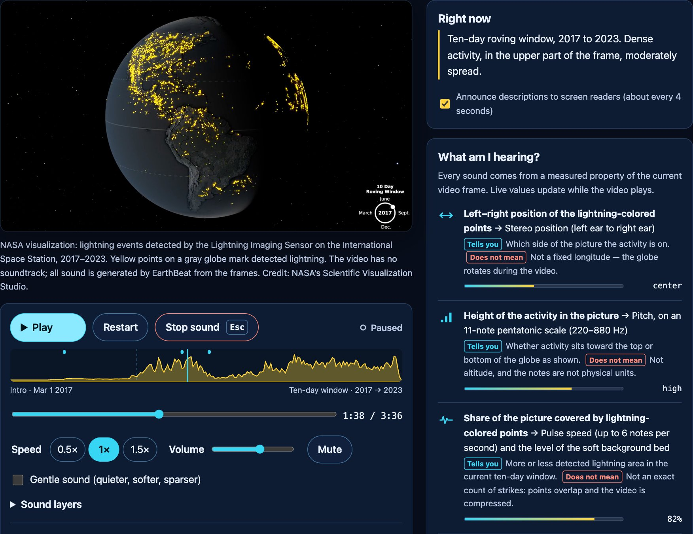
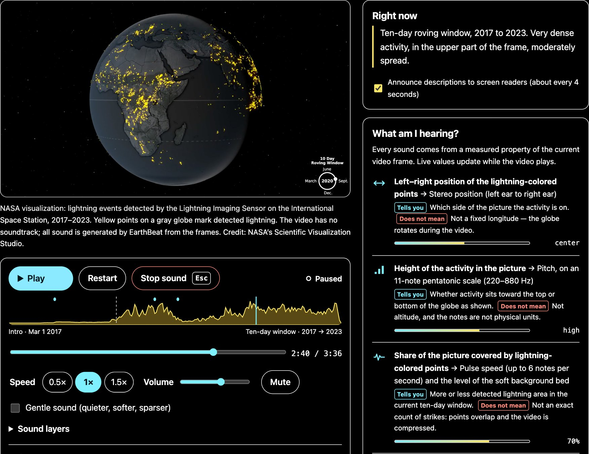
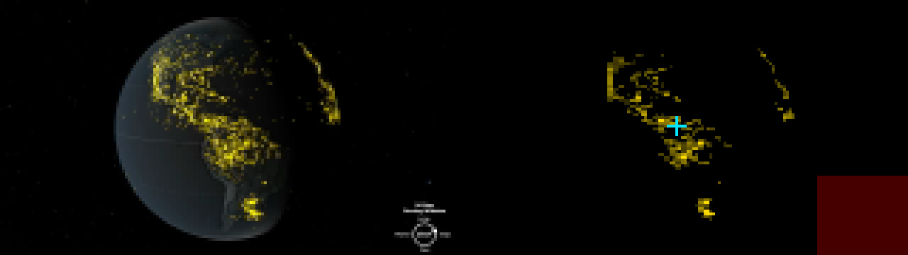

The Earth Information Jukebox · 2026 NASA Space Apps Challenge
EarthBeat
Hear our changing planet.
Fernando Cardenas · Team EarthBeat · Universal Event

1 / 7
The access gap
NASA Earth data is rich — and almost entirely visual.
- The Earth Information Center shares our changing planet as animated maps and globes.
- People who are blind or have low vision cannot see those patterns; many learners understand better by listening.
- A soundtrack added to a video does not help: the sound has to carry the data and explain itself.
EarthBeat's answer
Measure each NASA frame while it plays, turn the measurements into sound the same way every time, and say in words what each sound means.
2 / 7
The experience
Start · hear · explore · understand
- Start: one button; sound begins only when you press it.
- Hear: NASA's lightning globe plays in sync with sound generated from its frames.
- Explore: seek, slow down to 0.5×, jump to guided moments, switch sound layers on and off.
- Understand: a live legend and a spoken-style summary explain what is happening.

3 / 7
From NASA frames to sound
A deterministic, documented translation
- 1NASA video frames
- 2Sample 10 per second of video at 160×90
- 3Detect yellow lightning points; mask the date corner
- 4Normalized features 0–1
- 5Sound + live text
| In the frame | You hear |
|---|---|
| Left ↔ right position | Stereo position |
| Height in the frame | Pitch (pentatonic, 220–880 Hz) |
| Share of frame covered | Pulse speed and background level |
| Color strength | Loudness (safety-limited) |
| Change between frames | Soft ticks |
4 / 7
Accessibility by design
Fully usable without seeing it — or without hearing it
Keyboard
Native controls, skip link, Esc stops sound anywhere.
Screen readers
Landmarks, described video, polite summary every ~4 s, announced states.
Vision & motion
High contrast, strong focus outlines, reduced motion, phone layouts.
Comfortable sound
No autoplay, gentle mode, limiter, no sub-bass, Stop sound.

5 / 7
Validity and NASA data
Real NASA data, measured and tested
- Data: Lightning Events Detected from the ISS 2017–2023 (NASA SVS 5011), Lightning Imaging Sensor, ten-day roving window.
- Finding: pitch follows the seasons — activity sits higher in the frame in every northern summer checked (≥ 0.57) than in every northern winter (≤ 0.51).
- Tests: 36 unit/component + 15 browser tests pass; two full analysis runs identical; 0 automated accessibility violations.
- Limits: sonifies the rendered picture, not raw event counts; not a warning tool.

6 / 7
Impact and future
Many more NASA visualizations, heard by more people
- Classrooms: teachers of blind and low-vision students can explore Earth data alongside sighted peers.
- Museums and public displays: an audio layer for Earth Information Center content.
- Next: co-design and testing with blind and low-vision users; more EIC visualizations through the same engine.
Try itfernandojcardenas.github.io/earthbeat
Codegithub.com/fernandojcardenas/earthbeat
Visualization credit: NASA's Scientific Visualization Studio; data: ISS Lightning Imaging Sensor (Blakeslee, 2020, NASA GHRC DAAC).
Independent project, not endorsed by NASA. Built with SI-assisted development tools under the creator's direction.
7 / 7